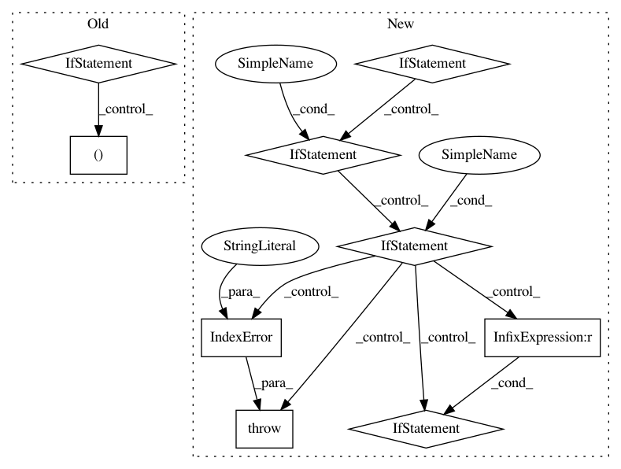

fa926b8278a3b635d929e0fe6c63ac2a8983a406,lib/prody/dynamics/nma.py,NMA,__getitem__,#NMA#Any#,58
Before Change
raise ValueError("{0} modes are not calculated, try "
"calcModes() method".format(str(self)))
indices = self._indices
if indices is None:
self._indices = indices = np.arange(self._n_modes)
try:
indices = indices[index]
except IndexError as err:
raise IndexError(str(err))
After Change
if self._n_modes == 0:
raise ValueError("{0} modes are not calculated, use "
"calcModes() method".format(str(self)))
if isinstance(index, int):
return self._getMode(index)
elif isinstance(index, slice):
indices = np.arange(*index.indices(len(self)))
if len(indices) > 0:
return ModeSet(self, indices)
elif isinstance(index, (list, tuple)):
for i in index:
assert isinstance(i, int), "all indices must be integers"
if len(index) == 1:
return self._getMode(index[0])
return ModeSet(self, index)
else:
raise IndexError("indices must be int, slice, list, or tuple")
def __iter__(self):
for i in range(self._n_modes):
yield self[i]
In pattern: SUPERPATTERN
Frequency: 3
Non-data size: 9
Instances
Project Name: prody/ProDy
Commit Name: fa926b8278a3b635d929e0fe6c63ac2a8983a406
Time: 2012-12-15
Author: lordnapi@gmail.com
File Name: lib/prody/dynamics/nma.py
Class Name: NMA
Method Name: __getitem__
Project Name: J535D165/recordlinkage
Commit Name: 798d71d25f579604bda909cf2297727f1bf3a1df
Time: 2017-11-12
Author: jonathandebruinhome@gmail.com
File Name: recordlinkage/indexing.py
Class Name: SortedNeighbourhoodIndex
Method Name: _link_index
Project Name: J535D165/recordlinkage
Commit Name: 798d71d25f579604bda909cf2297727f1bf3a1df
Time: 2017-11-12
Author: jonathandebruinhome@gmail.com
File Name: recordlinkage/indexing.py
Class Name: BlockIndex
Method Name: _link_index